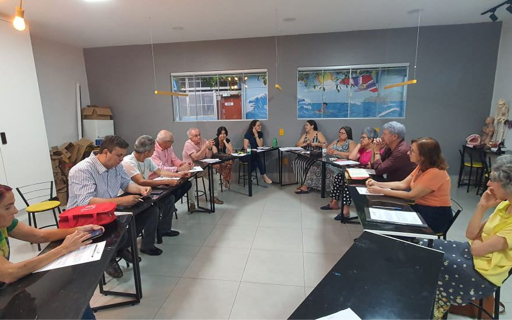

Sobre o projeto
Reforço educacional
No projeto será ofertado aulas como de inglês, matemática, eletrônica, programação.

Desenvolvimento de valores
Ensino baseado em princípios cristãos para formar líderes éticos e responsáveis
Formação de Profissionais
Intuito em capacitar novos profissionais de róbotica